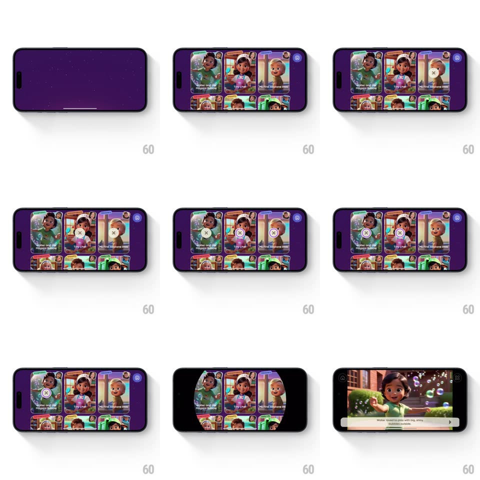

Media
Frame-by-frame

Rebuild this interaction 1:1: Super's story library - a purple splash resolves into a grid of story cards where undownloaded stories show circular progress rings (cancelable with an x), and tapping a ready card opens the player through a circular zoom that blooms from the card itself.

Rebuild this interaction 1:1: Super's story library - a purple splash resolves into a grid of story cards where undownloaded stories show circular progress rings (cancelable with an x), and tapping a ready card opens the player through a circular zoom that blooms from the card itself.
## Integration
Integration: stack-agnostic spec - springs given as stiffness/damping, timed motions as duration + curve; map every value to your framework and animation library of choice.
## Scene
Purple "Super" splash, then a 2-3 column grid of illustrated story cards ("Walter and the Magical Bubble", "Tiny Chef", ...) with title bands and small corner badges. Downloading cards: a frosted overlay with a thin white progress ring, an x in its center. Player: full-screen illustration with a caption bar.
## Motion spec
Pattern: card grid with ring downloads + circular reveal into the player.
- Splash logo sparkles once, then the grid springs in card by card (scale 0.85 -> 1, spring ~360/18, 50ms stagger, reading order).
- Download start: the card frosts over (200ms) and the ring draws from 0 (stroke tracking real progress, ease-linear); the x pulses gently (scale 1 -> 1.08, 1.2s).
- Tap x mid-download: the ring unwinds backward (300ms, reversing its own path) and the frost lifts - cancel as the inverse of start.
- Download complete: the ring closes, flashes full-white, and shrinks into the card's corner badge (200ms) - progress becomes a possession.
- Tap a ready card: a circular mask grows from the card's center (scale spring ~340/20, 450ms) revealing the player inside it - the card IS the doorway; the caption bar slides up last (spring ~360/20).
## Calibration
- Rings are thin and precise - kid-friendly grid, grown-up progress feedback.
- The circular reveal keeps the card's artwork continuous with the opening scene.
## Reduced motion
Grid fades in; player opens with a plain fade.
## Don't miss
- The reveal originates at the tapped card, not screen center - geometry remembers intent.
- Cancelling visibly UNDOES the ring - no silent reset.